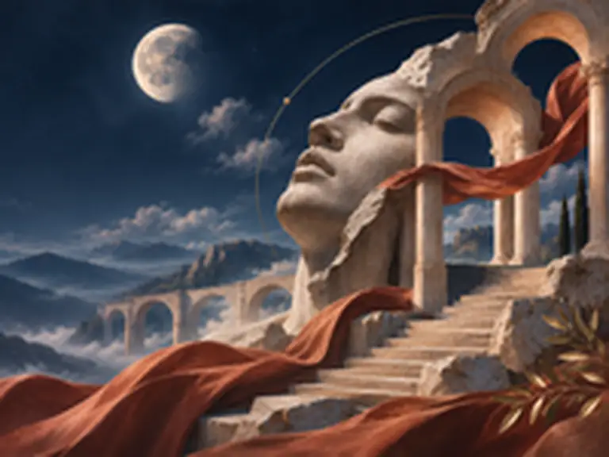
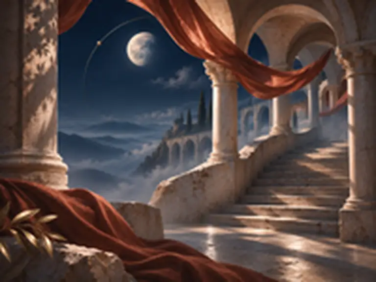

One image.
One world.
Satu gambar raster menyimpan keseluruhan pencahayaan, material, dan kedalaman visual. Website menyusun ruang untuk gambar tersebut—bukan menumpuk objek dekoratif untuk menirunya.
LIGHTING / MATERIAL / DEPTH / COMPOSITIONSTUDI KONSEP — SERA dan judul proyek merupakan konten fiktif untuk mengevaluasi struktur. Tidak mewakili riwayat atau proyek klien nyata.
THE SPACE BETWEEN WORLDS
A passage
into another
world.
Architecture is not the ornament. It is the invitation to imagine somewhere beyond what is visible.

Light belongs to the world.
The moon, architecture, statue, sky, fabric, and atmosphere are already composed in one authored image. No artificial visual overlays are required.
THE UNFOLDING MONOGRAPH
Places that
remember
the light.
A publication about a room, a passage, and the shadows that make both feel real.

Editorial pacing comes from scale, margins, image sequence and typography—not extra floating objects.
Can a single authored image carry the atmosphere?
Statement → master scene → field note.
Realistic material and depth are baked into the master asset; no browser parallax.
An illustration must never replace actual client achievements or project proof.
No SVG. No decorative image layering. No pseudo-element illusions. Each concept uses exactly one independently framed master raster; text, navigation and interface remain outside the image.
READ MASTER MAPPING ↗